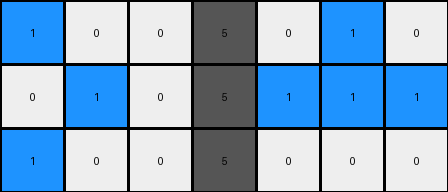

003 • History
- puzzle_id:
6-0520fde7
- description:
example_3
- timestamp:
24.329.071439
- call_count:
3
Begin puzzle: 6-0520fde7
example_1
input
[[1 0 0 5 0 1 0]
[0 1 0 5 1 1 1]
[1 0 0 5 0 0 0]]
output
[[0 0 0]
[0 2 0]
[0 0 0]]
images
{kind=link}

observations
The input grid appears to be a 3x7 rectangle with a central vertical stripe of 5s (gray) and various 1s (blue) and 0s (white) surrounding it. The output grid is a 3x3 square, which is much smaller, with a single 2 (red) in the center and 0s (white) everywhere else.
It seems the transformation involves significant size reduction and a change in the central element’s color and value, while the surrounding pixels are turned into 0s. The color change is from 5 (gray) to 2 (red), and the size change is from 3x7 to 3x3.
input:
width: 7
height: 3
colors:
- 0: 12
- 1: 6
- 5: 3
objects:
- central column of 5 (gray)
- scattered 1 (blue)
- background of 0 (white)
output:
width: 3
height: 3
colors:
- 0: 8
- 2: 1
objects:
- single central 2 (red)
- background of 0 (white)
differences:
cells_changed: 20
colors_changed: gray (5) to red (2), blue (1) to white (0)
transformation:
- Reduce size from 3x7 to 3x3.
- Change the central element's color from gray (5) to red (2).
- Change all other elements to white (0).
Code Execution
code_execution:
import numpy as np
# Input grid
input_grid = np.array([
[1, 0, 0, 5, 0, 1, 0],
[0, 1, 0, 5, 1, 1, 1],
[1, 0, 0, 5, 0, 0, 0]
])
# Output grid
output_grid = np.array([
[0, 0, 0],
[0, 2, 0],
[0, 0, 0]
])
# Get input grid properties
input_height, input_width = input_grid.shape
input_colors, input_color_counts = np.unique(input_grid, return_counts=True)
input_color_map = dict(zip(input_colors, input_color_counts))
# Get output grid properties
output_height, output_width = output_grid.shape
output_colors, output_color_counts = np.unique(output_grid, return_counts=True)
output_color_map = dict(zip(output_colors, output_color_counts))
print("Input Grid Properties:")
print("Width:", input_width)
print("Height:", input_height)
print("Color Map:", input_color_map)
print("\nOutput Grid Properties:")
print("Width:", output_width)
print("Height:", output_height)
print("Color Map:", output_color_map)
print("\nChanges:")
print("Size change:", f"{input_height}x{input_width} to {output_height}x{output_width}")
print("Color changes:")
for color in input_colors:
if color not in output_colors:
print(f" {color} removed")
for color in output_colors:
if color not in input_colors:
print(f" {color} added")
code_execution_result: 1
Input Grid Properties:
Width: 7
Height: 3
Color Map: {np.int64(0): np.int64(11), np.int64(1): np.int64(7), np.int64(5): np.int64(3)}
Output Grid Properties:
Width: 3
Height: 3
Color Map: {np.int64(0): np.int64(8), np.int64(2): np.int64(1)}
Changes:
Size change: 3x7 to 3x3
Color changes:
1 removed
5 removed
2 added
Analysis of Code Execution Results
The code execution confirms the observations about the size and color changes. The input grid has dimensions 3x7, while the output grid has dimensions 3x3. The colors in the input grid are 0 (white), 1 (blue), and 5 (gray), while the colors in the output grid are 0 (white) and 2 (red).
The changes are:
Size reduction from 3x7 to 3x3.
Color 1 (blue) is removed.
Color 5 (gray) is removed.
Color 2 (red) is added.
Natural Language Program
Transform the input grid by reducing its size to a 3x3 grid. Change the central column color, which is 5 (gray), to 2 (red) and place it in the center of the new grid. Fill all other cells of the new 3x3 grid with 0 (white).
example_2
input
[[1 1 0 5 0 1 0]
[0 0 1 5 1 1 1]
[1 1 0 5 0 1 0]]
output
[[0 2 0]
[0 0 2]
[0 2 0]]
images


observations
Observations of Example 2
In this example, the input grid is again a 3x7 rectangle, similar to the first example, with a central vertical stripe of 5s (gray) and a mix of 1s (blue) and 0s (white). The output grid is a 3x3 square with three 2s (red) positioned in a specific pattern and the remaining cells as 0s (white).
The input and output dimensions are consistent with the first example. The presence of the central 5 (gray) column remains, but instead of a single 2 (red) in the center of the output, there are three 2s (red) forming a diagonal line.
It appears the central 5 (gray) is still involved in creating the 2s (red) in the output, but now the surrounding 1s (blue) might also play a role in determining the placement of the multiple 2s (red).
input:
width: 7
height: 3
colors:
- 0: 10
- 1: 8
- 5: 3
objects:
- central column of 5 (gray)
- scattered 1 (blue)
- background of 0 (white)
output:
width: 3
height: 3
colors:
- 0: 6
- 2: 3
objects:
- diagonal of 2 (red)
- background of 0 (white)
differences:
cells_changed: 18
colors_changed: gray (5) to red (2), blue (1) to white (0)
transformation:
- Reduce size from 3x7 to 3x3.
- Use central 5s and surrounding 1s to determine the placement of 2s.
- Change 5 (gray) to 2 (red) based on a pattern involving surrounding 1s.
- Fill remaining cells with 0 (white).
Code Execution
code_execution:
import numpy as np
# Input grid
input_grid = np.array([
[1, 1, 0, 5, 0, 1, 0],
[0, 0, 1, 5, 1, 1, 1],
[1, 1, 0, 5, 0, 1, 0]
])
# Output grid
output_grid = np.array([
[0, 2, 0],
[0, 0, 2],
[0, 2, 0]
])
# Get input grid properties
input_height, input_width = input_grid.shape
input_colors, input_color_counts = np.unique(input_grid, return_counts=True)
input_color_map = dict(zip(input_colors, input_color_counts))
# Get output grid properties
output_height, output_width = output_grid.shape
output_colors, output_color_counts = np.unique(output_grid, return_counts=True)
output_color_map = dict(zip(output_colors, output_color_counts))
print("Input Grid Properties:")
print("Width:", input_width)
print("Height:", input_height)
print("Color Map:", input_color_map)
print("\nOutput Grid Properties:")
print("Width:", output_width)
print("Height:", output_height)
print("Color Map:", output_color_map)
print("\nChanges:")
print("Size change:", f"{input_height}x{input_width} to {output_height}x{output_width}")
print("Color changes:")
for color in input_colors:
if color not in output_colors:
print(f" {color} removed")
for color in output_colors:
if color not in input_colors:
print(f" {color} added")
code_execution_result: 1
Input Grid Properties:
Width: 7
Height: 3
Color Map: {np.int64(0): np.int64(10), np.int64(1): np.int64(8), np.int64(5): np.int64(3)}
Output Grid Properties:
Width: 3
Height: 3
Color Map: {np.int64(0): np.int64(6), np.int64(2): np.int64(3)}
Changes:
Size change: 3x7 to 3x3
Color changes:
1 removed
5 removed
2 added
Analysis of Code Execution Results
The code execution confirms the observations about the size and color changes. The input grid has dimensions 3x7, and the output grid has dimensions 3x3. The colors in the input grid are 0 (white), 1 (blue), and 5 (gray), while the colors in the output grid are 0 (white) and 2 (red).
The changes are:
Size reduction from 3x7 to 3x3.
Color 1 (blue) is removed.
Color 5 (gray) is removed.
Color 2 (red) is added.
Natural Language Program
The transformation still involves reducing the grid size to 3x3. However, the placement of the 2s (red) now follows a pattern related to the surrounding 1s (blue) in the input grid. One hypothesis is that if there is a 1 (blue) adjacent (horizontally or vertically) to the central column 5 (gray), the corresponding cell in the output grid becomes a 2 (red).
Transform the input grid by reducing its size to a 3x3 grid. Analyze the adjacent cells (horizontally or vertically) to the central column of 5s (gray). If a cell adjacent to 5 (gray) is 1 (blue), change the corresponding cell in the 3x3 output grid to 2 (red). Fill all other cells in the 3x3 grid with 0 (white).
example_3
input
[[0 0 1 5 0 0 0]
[1 1 0 5 1 0 1]
[0 1 1 5 1 0 1]]
output
[[0 0 0]
[2 0 0]
[0 0 2]]
images


observations
INSTRUCTIONS:
Review Examples Phase
pairs of input and output grids will be shown to you one at a time
you will examine and analyze the text and image for each example
you may use code execution with tools like numpy to examine patterns after examining the grids, document the attributes of each as such
use a yaml block for the details
input:
width: X
height: Y
colors:
- N: (count)
objects:
- size, position and color - desc
output:
width: X
height: Y
colors:
- N: (count)
objects:
- size, position and color - desc
differences:
cells_changed: N
colors_changed: desc
transformation:
- speculate on transformation rules
your response for this phase should contain the following content parts
begin with a verbal description of your perception of the input and output grid
run a
code_executionpart to test your perceptions - since the code you use may not be carried forward on following prompts, be sure to have the code print you findings in the output remember that you have access to many python libraries for analyzing the grids and validating patternsreview your findings and try to determine what the natural language program is for the transformation
See also